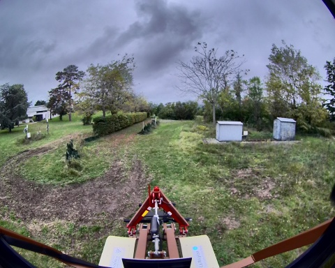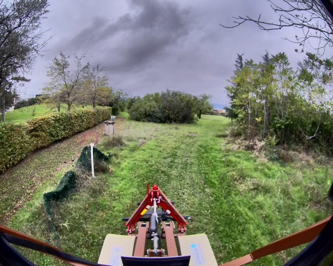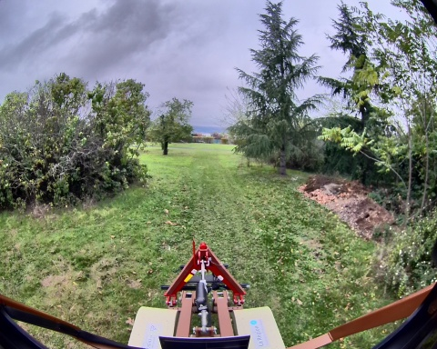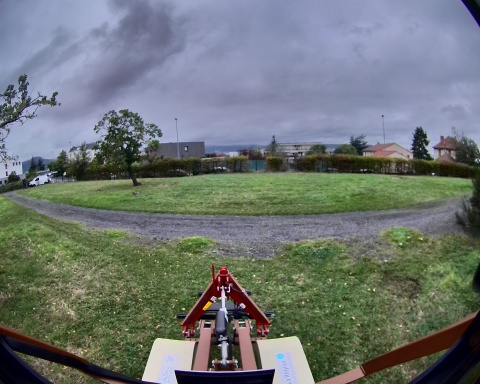
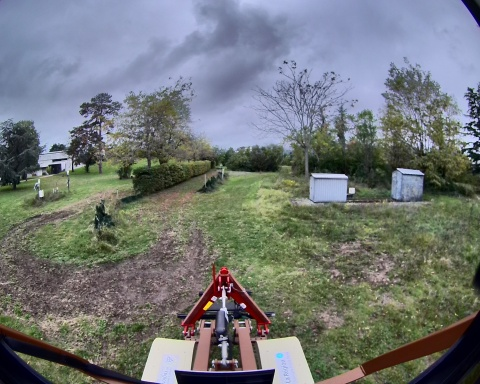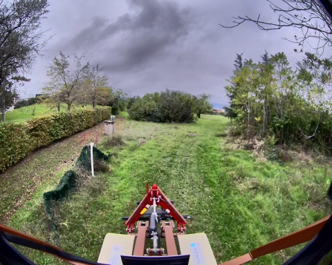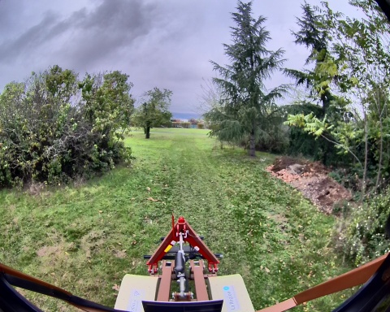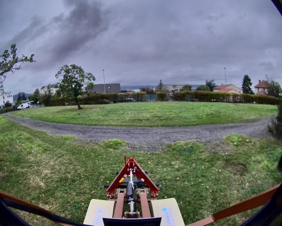Chemin complet : /data/synchro_data/Innodura/Agrivia/Données/2024_bag/agribo_2_23_10_2024
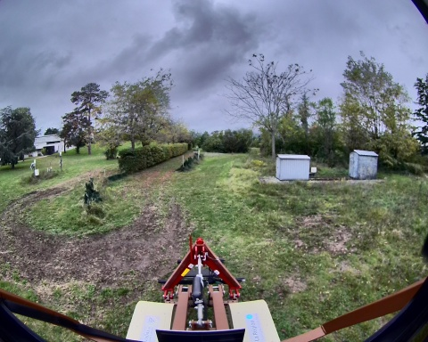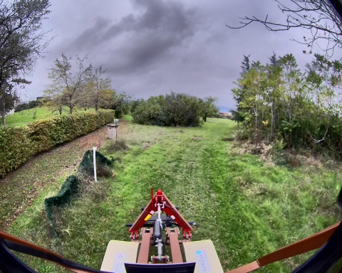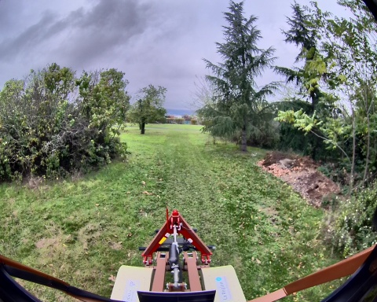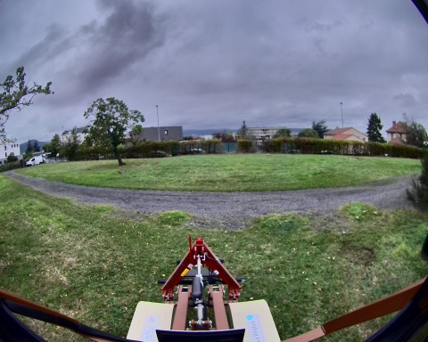
Files: agribo_2_23_10_2024_0.db3
Bag size: 748.8 MiB
Storage id: sqlite3
Duration: 54.399806436s
Start: Oct 23 2024 14:52:15.634361960 (1729687935.634361960)
End: Oct 23 2024 14:53:10.034168396 (1729687990.034168396)
Messages: 35215
Topic information: Topic: /alpo/base/controller/odometry | Type: romea_mobile_base_msgs/msg/OneAxleSteeringMeasureStamped | Count: 557 | Serialization Format: cdr
Topic: /alpo/camera/image_synchro | Type: sensor_msgs/msg/Image | Count: 93 | Serialization Format: cdr
Topic: /alpo/imu/velocity | Type: geometry_msgs/msg/TwistStamped | Count: 5439 | Serialization Format: cdr
Topic: /alpo/gps/vel | Type: geometry_msgs/msg/TwistStamped | Count: 529 | Serialization Format: cdr
Topic: /alpo/joystick/joy | Type: sensor_msgs/msg/Joy | Count: 395 | Serialization Format: cdr
Topic: /diagnostics | Type: diagnostic_msgs/msg/DiagnosticArray | Count: 202 | Serialization Format: cdr
Topic: /rosout | Type: rcl_interfaces/msg/Log | Count: 833 | Serialization Format: cdr
Topic: /parameter_events | Type: rcl_interfaces/msg/ParameterEvent | Count: 0 | Serialization Format: cdr
Topic: /tf_static | Type: tf2_msgs/msg/TFMessage | Count: 6 | Serialization Format: cdr
Topic: /tf | Type: tf2_msgs/msg/TFMessage | Count: 974 | Serialization Format: cdr
Topic: /alpo/base/controller/odom | Type: nav_msgs/msg/Odometry | Count: 557 | Serialization Format: cdr
Topic: /alpo/gps/nmea_sentence | Type: nmea_msgs/msg/Sentence | Count: 8141 | Serialization Format: cdr
Topic: /alpo/robot_description | Type: std_msgs/msg/String | Count: 1 | Serialization Format: cdr
Topic: /alpo/gps/fix | Type: sensor_msgs/msg/NavSatFix | Count: 544 | Serialization Format: cdr
Topic: /alpo/gps/ntrip/rtcm | Type: mavros_msgs/msg/RTCM | Count: 0 | Serialization Format: cdr
Topic: /alpo/joint_states | Type: sensor_msgs/msg/JointState | Count: 1 | Serialization Format: cdr
Topic: /alpo/base/bridge/vehicle_controller/odom | Type: nav_msgs/msg/Odometry | Count: 544 | Serialization Format: cdr
Topic: /alpo/imu/data | Type: sensor_msgs/msg/Imu | Count: 5440 | Serialization Format: cdr
Topic: /alpo/lidar/pointcloud_synchro | Type: sensor_msgs/msg/PointCloud2 | Count: 79 | Serialization Format: cdr
Topic: /alpo/imu/imu_data_str | Type: std_msgs/msg/String | Count: 5440 | Serialization Format: cdr
Topic: /alpo/imu/mag | Type: sensor_msgs/msg/MagneticField | Count: 5440 | Serialization Format: cdr